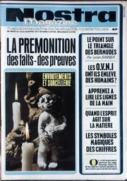
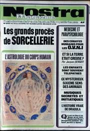

A Foix (Ariège), plusieurs personnes dans un
véhicule remarquent dans le ciel un nuage lumineux qui les intrigue. Les témoins aperçoivent ensuite une lueur de
forme allongée qui se détache lentement du nuage sur une trajectoire rectiligne. Aucun bruit particulier n'est
entendu par les témoins qui se sont arrêtées sur le bas-côté. La lueur disparaîtra dans une masse nuageuse GEPAN : PAN
classé C.
Selon certaines sources, récupération de 11 corps suite à un crash dans le sud-ouest de l'Ohio.
A Milford Haven, dans le Pembrokeshire, Wales (UK), Cyril John (64 ans), ancien leader political local, est debout tôt pour un démarrage tôt à
London lorqu'il remarque une lumière brillant dans la fenêtre de sa chambre. En regardant dehors il voit 2 objets :
le 1er, en forme d'œuf, de couleur gris argenté avec une lumière brillante rouge orangé au sommet et d'environ 4
pieds de large, bascule doucement dans les airs à 60 yards de distance environ ; le 2nd est une sorte
d'humanoïde, de 7 à 8 pieds de haut, flottant dans les airs avec bras et jambes pliés en arrière, comme un
parachutiste en chute libre, à environ 35 pieds de distance, entre l'objet et le témoin. Aucune
caractéristique n'est discernable sur le visage de l'humanoïde, qui est vêtu d'une combinaison de
chaudronnier d'un gris argenté uniforme. Il reste sans mouvement dans les airs pendant plus de
, puis avec l'objet commence lentement à se déplacer, disparaissant de vue au loin Humcat 1977-17 < Randall Jones Pugh for BUFORA.
Nostra n° 262 du 13 titrant "Les ovnis ont-ils enlevé des humains ?"

Le superintendant Cooper de la police du West Yorkshire (UK) est en service dans une voiture de patrouille à Laisterdyke : Je regardais sur ma
droite et à travers la vitre du côté de la voiture j'ai vu une lumière argentée brillante. D'abord j'ai pensé que
c'était une étoile brillante. C'était bas dans le ciel, à une grande distance... puis j'ai pensé que cette lumière
se déplaçait. La lumière était visible juste au-dessus du toit des maisons de Ferrand Avenue à la jonction avec
Hambledon Avenue. Il continue à observer l'objet qui se déplace le long du sommet des toits jusqu'à ce que la
lumière s'évanouisse soudainement. Il déclare : La lumière partit et je ne pouvais plus voir quoi que ce soit dans
le ciel à l'endroit où s'était trouvée la lumière. J'ai alors contacté les Opérations qui ont signalé n'avoir
enregistré aucune observation MoD < Robert Verkaik, "UK's
Ministry Of Defense UFO Files Released", The Independent, UK, 22 janvier 2005.
Le contrôle aérien de Maastrich informe le capitaine Hans George Schmid, de Swissair, que quelque chose le suit à 15 nautiques
(30 km) derrière lui. Schmid confirme les échos et la distance sur son propre radar, à 3
° d'élévation. L'objet est par la suite décrit comme partant à 4 à 5 fois la vitesse du son (le rapport du
contrôleur indiquera par la suite entre 10000 et 12000 km/h) Ovnis, sur les
traces d'une énigme.
A Little Haven, dans le Pembrokeshire, Wales (UK), la radio de la propriétaire d'hôtel Rosa Gremville s'arrête soudain de fonctionner
; quelques instants plus tard elle entend un fort bruit de ronflement à l'extérieur ; regardant dehors, elle est
éclairée par une énorme lune éclairant la zone, se déplaçant comme une balançoire. Il descent et atterrit sur
un terrain à 100 yards derrière l'hôtel. Il était rond, avec des flammes sortant du sommet d'un dôme. Il y avait
une lumière dessus, comme une étoile pulsante. 2 créatures de 8pieds ou 9pieds de haut émergent du dôme à travers les flammes ;
ils ont sur eux des combinaisons de saut (ou de chaudronnier) couleur crême ou argentées. Observant à
travers des jumelles, elle ne peut voir ni des caractéristiques -- juste un visage vide -- ni aucun cheveu ; on
dirait qu'ils ont des bras, mais elles ne voit pas de doigts. J'ai pensé que leurs pieds étaient palmés.
Autour de l'objet, les personnages marchent pendant 15 mn. Melle Gremville veut crier, mais a perdu sa voix.
Elle part chercher un autre témoin mais lorsqu'ils reviennent, l'objet et les personnages ne sont plus là. Cependant
des trâces de brûlures seront trouvées sur le site le jour
suivant Humcat 1977-18 < Randall Jones Pugh for BUFORA.
Nostra n° 263 du 20 titrant "Des cobayes humains pour les ovnis"

À Herbrandston (Pembrokeshire, Wales), Mark Marston (11 ans) est à la recherche de nids d'oiseaux dans une haie lorsque une
lueur rouge apparaît dans le ciel à 50 yards. Quelques instants plus tard un personnage apparaît dérivant vers
une grille fermée à l'autre extrémité du terrain. Il est vêtu d'une combinaison argentée, comme un plongeur, avec un
grand casque et un visage carré sans caractéristiques. Il approche rapidement de Mark, qui tourne les talons et
fonce chez lui en hurlant Humcat 1977-19 < Randall Jones Pugh pour le BUFORA.
Près de Dale (Pembrokeshire, Wales), Mme Pauline Coombs (31 ans) et son mari Billy (36 ans) sont en
train de regarder la télévision à la ferme Ripperston lorsque Pauline
voit à une fenêtre un personnage en combinaison argentée. Elle ne dit rien jusqu'à ce que son mari le remarque
aussi. Il devait faire plus de 7pieds de haut, parce qu'ils n'ont pu voir son visage
(?). Il faisait 3 pieds de large et était entouré d'une lueur lumineuse ; son casque en forme de boîte encadre une
zone carrée sombre où aucun visage n'est visible. Ils appellent l'enquêteur et la police immédiatement, mais le
personnage est parti avant qu'ils arrivent. Mme Coombs et sa famille ont été impliqués
dans plusieurs autres incidents avant et après cette rencontreHumcat 1977-23 < Randall Jones Pugh pour le BUFORA.
et A Angers (Maine-et-Loire), 2
personnes observent le lent déplacement d'un "cigare" émettant des lumières de différentes couleurs et se déplaçant
parallèlement à la Maine. Malgré une observation de , les témoignages restent succincts. Un 3ème
témoin retrouvé par la gendarmerie, fera état d'une observation de ce même jour
décrivant le déplacement NE-SO d'une boule rouge avec une "queue" qui finira par "s'éteindre" L'hypothèse de la
rentrée atmosphérique n'a pas été confirmée par manque d'informations GEPAN : PAN
classé C.
A Cagnes-sur-Mer (Alpes Maritimes), des personnes
aperçoivent une lueur et entendent un bruit de crépitement ou de sifflement. La gendarmerie sera avertie tardivement
de ces faits et ne pourra trouver aucune trace ou indice sur les lieux. Les témoignages divergent sur beaucoup de
données et les faits n'ont pu être déterminés avec précision GEPAN : PAN
classé C.
À Acapulco, Salvador Freixedo déclare au Congrès International d'Ufologie : Phénomènes
ovnis et religion ont beaucoup
en communRidpath, Ian: "Flying
saucers thirty years on", New Scientist vol. 75, n° 1060, pp. 77.